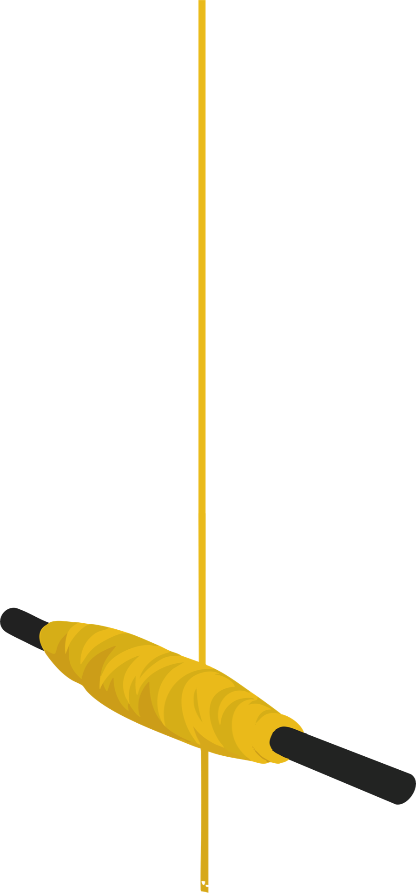
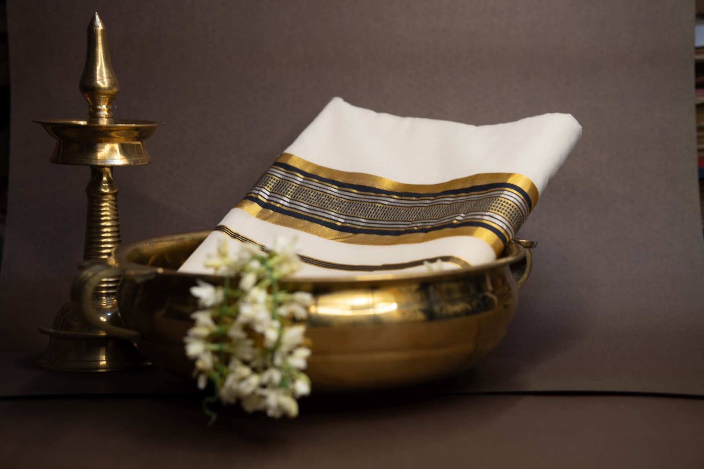
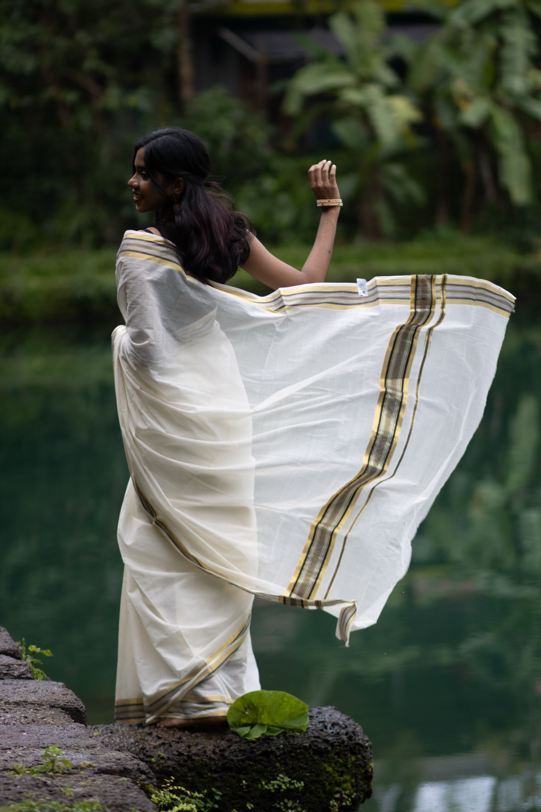
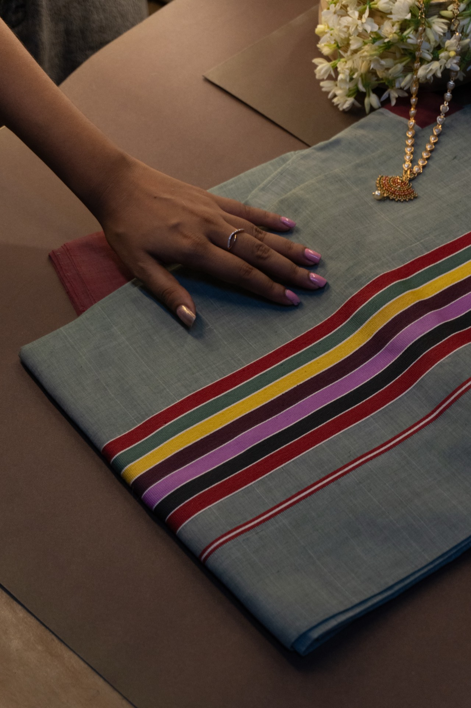
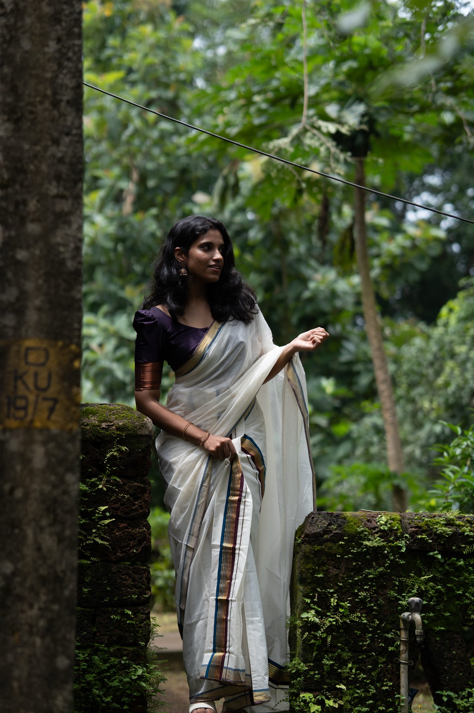
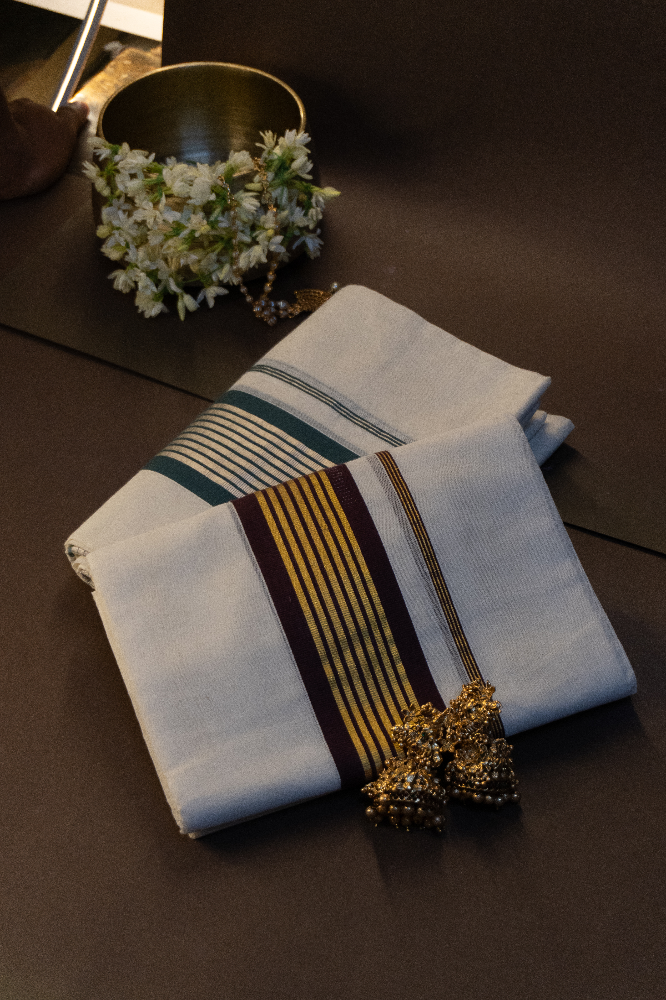
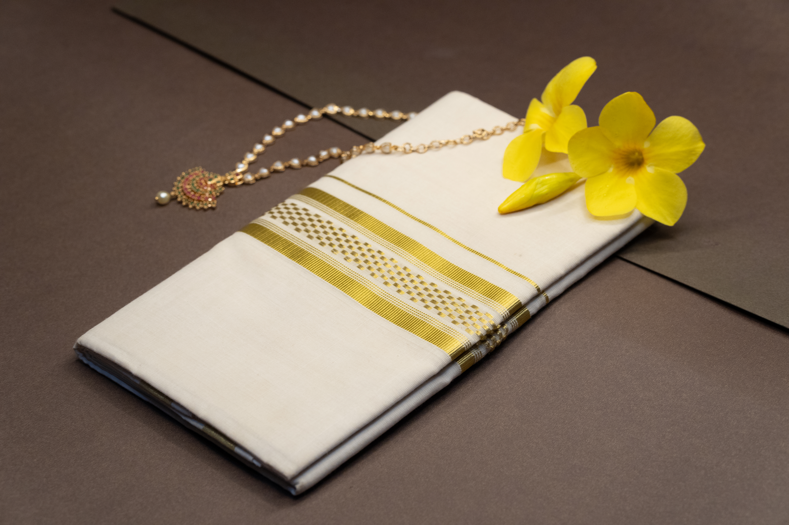
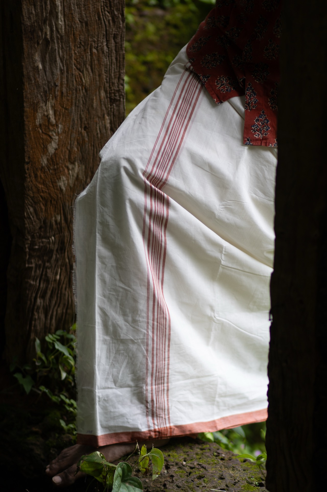

Elegance Woven in Gold
Our Products
Authentic Kerala handlooms — pure cotton, genuine Kasavu, made at Eravathody, the No. 1 Handloom Society in Kerala.

The Signature Eravathody Collection
Every piece carries the legacy of Tamil Mudaliar weavers who settled in Kerala over 200 years ago. Woven with cotton yarn from Salem & Coimbatore and zari from Surat, each product bears the authentic Handloom Mark.
Kasavu Sarees
Kerala's pride — white and gold textiles worn from temple visits to weddings. The term Kasavu refers to the golden zari woven into its borders.

Kasavu Saree
Woven with half fine zari and dyed yarns, this saree blends the classic white Kasavu body with coloured decorative borders — ideal for festive and ceremonial wear.

Kasavu Saree
A lighter variant woven with half fine zari and dyed yarns, offering an elegant everyday option that retains the signature Eravathody craftsmanship.

Kasavu Saree
An accessible entry-point into authentic Eravathody weaving — half fine zari with dyed yarn accents, handcrafted with the same generational skill.

Kasavu Saree — Premium
The finest offering — woven with premium half fine zari throughout, this saree embodies the pinnacle of Eravathody craftsmanship. A cherished heirloom for weddings and auspicious occasions.
Set Mundu
The traditional two-piece garment of Kerala women — a mundu and neriyathu — elegantly matched with Kasavu borders. Worn proudly at festivals, temples, and ceremonies.

Set Mundu
A classic Set Mundu woven with half fine zari and dyed yarns — the vibrant coloured borders lend a festive, elegant touch to this timeless Kerala garment.

Set Mundu — Premium
A premium Set Mundu woven entirely with half fine zari — the golden Kasavu border radiates an understated luxury, perfect for weddings and special occasions.

Set Mundu
Woven with half fine zari and a clean white cotton body, this Set Mundu offers a pure, traditional look — simple in form, rich in heritage.

Set Mundu
An affordable yet beautifully crafted Set Mundu blending dyed yarns with half fine zari — a cheerful, colourful option for everyday festive wear.
Double Mundu
The iconic Kerala men's garment — a double-length dhoti with the signature Kasavu kara. A staple of tradition, culture, and everyday dignified living.

Double Mundu
Woven with high-quality dyed cotton yarn, this Double Mundu is a staple of Kerala men's traditional attire. The crisp finish, durable weave, and signature coloured kara make it ideal for daily wear and ceremonial use alike. Crafted at Eravathody with over 80 years of generational expertise.